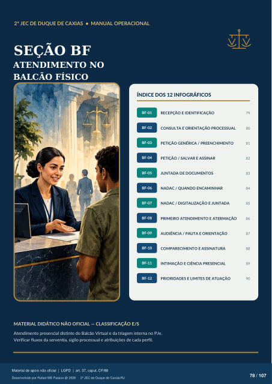

Texto da camada original do PDF
2º JEC DE DUQUE DE CAXIAS • MANUAL OPERACIONAL
SEÇÃO BF
ATENDIMENTO NO
BALCÃO FÍSICO
ÍNDICE DOS 12 INFOGRÁFICOS
BF-01
RECEPÇÃO E IDENTIFICAÇÃO
79
BF-02
CONSULTA E ORIENTAÇÃO PROCESSUAL
80
BF-03
PETIÇÃO GENÉRICA / PREENCHIMENTO
81
BF-04
PETIÇÃO / SALVAR E ASSINAR
82
BF-05
JUNTADA DE DOCUMENTOS
83
BF-06
NADAC / QUANDO ENCAMINHAR
84
BF-07
NADAC / DIGITALIZAÇÃO E JUNTADA
85
BF-08
PRIMEIRO ATENDIMENTO E ATERMAÇÃO
86
BF-09
AUDIÊNCIA / PAUTA E ORIENTAÇÃO
87
BF-10
COMPARECIMENTO E ASSINATURA
88
BF-11
INTIMAÇÃO E CIÊNCIA PRESENCIAL
89
BF-12
PRIORIDADES E LIMITES DE ATUAÇÃO
90
MATERIAL DIDÁTICO NÃO OFICIAL — CLASSIFICAÇÃO E/S
Atendimento presencial distinto do Balcão Virtual e da triagem interna no PJe. Verificar fluxos da serventia, sigilo processual e atribuições de cada perfil.
Ver também o infográfico original (página 78)
